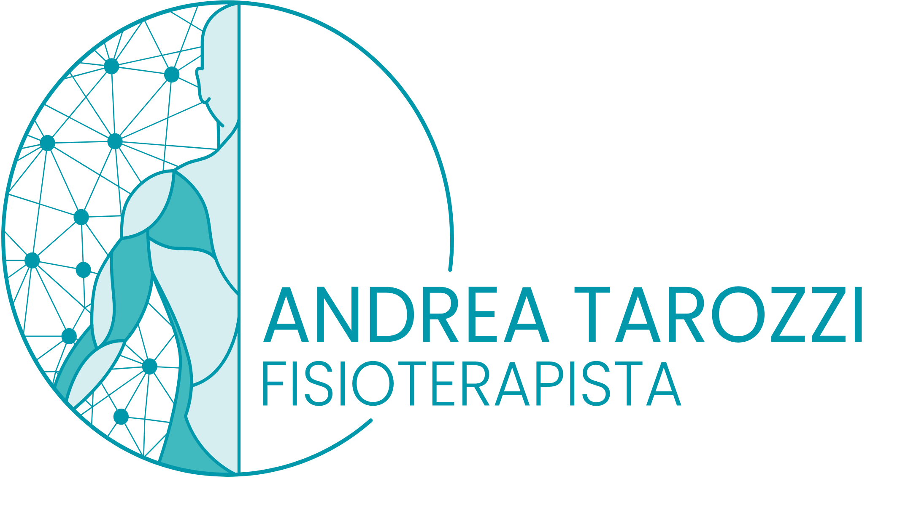

🚧
Sito in costruzione
Stiamo lavorando per offrirti un sito ricco di informazioni
per la tua salute
Verrai reindirizzato a Google Maps tra 5 secondi

Stiamo lavorando per offrirti un sito ricco di informazioni
per la tua salute